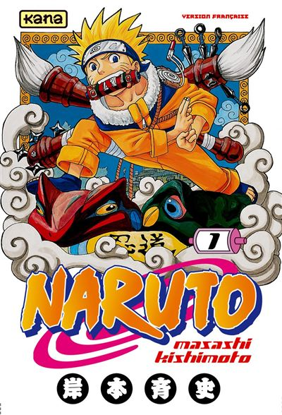

Les Shonens
C’est le genre manga le plus connu et celui qui a démocratisé le manga en Europe. Si je vous parle de « Dragon Ball », « Naruto », « One Piece », ou encore « Bleach » ce sont les mangas les plus connus et font tous partis du genre Shonen. Le Shonen est donc généralement adressé aux adolescents (mais pas que). Ce genre présente beaucoup d’action et des personnages qui au départ sont faibles et qui par de nombreux entraînements deviennent de plus en plus fort. Le personnage principal tisse des liens avec d’autres personnages jusqu’à devenir une vraie famille. Il se sacrifierait pour ses proches. Vous pouvez voir différents exemples de Shonen si-dessous.
One piece est l'un (voir le) des plus populaires du monde. Les aventures d'un jeune pirate nommé Monkey D Luffy à la poursuite de son rêve vous emmènera dans un monde fantastique remplit d'émotions en tout genre..
Bleach (mon préfèré) raconte l'histoire d'un jeune étudiant de 15ans, Ichigo Kurosaki capable de voir les fantômes. Suites à un évènement hasardeux, il se retrouvera plongé dans un monde qu'il ne connaissait pas, luttant contre les forces maléfiques..

Naruto raconte l'histoire d'un jeune orphelin, rejeté par son village, à la conquète de son rêve le plus cher : Devenir Hokage. C'est dans un monde ou les ninjas sont omniprésents qu'il devra faire ses preuves afin d'aller au bout de ses objectifs..